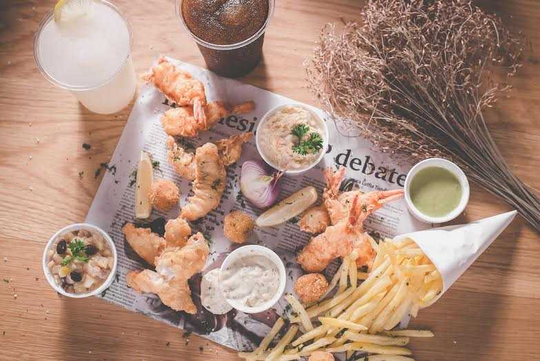
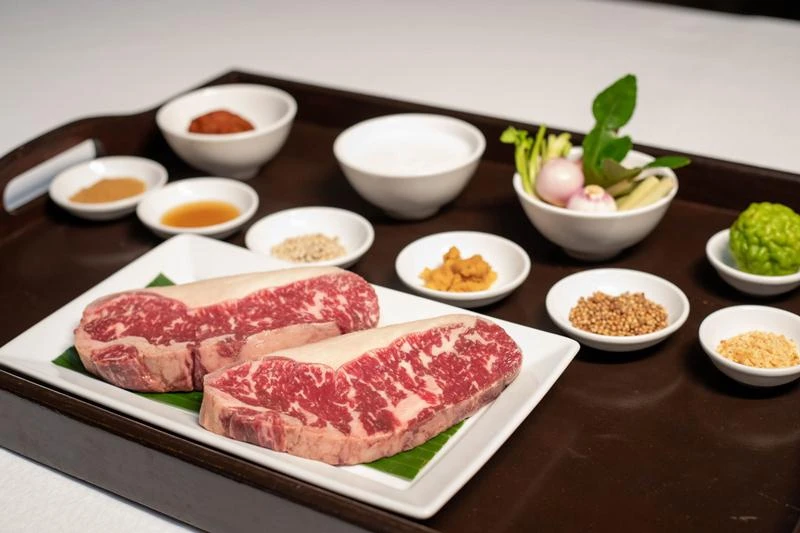

Australia

Aussie Meat Pie
- พายสำเร็จรูป 4 แผ่น
- เนื้อสเต็ก 500g
- เห็ดแชมปิญองสด 6 ลูก (หรือ 1/2 กระป๋อง)
- หัวหอม 1/2 ลูก
- แครอท 1/2 หัว
- น้ำมันมะกอก
- น้ำสต๊อกเนื้อ 500ml
- ไวน์แดง 2 ชต
- น้ำส้มสายชูไซเดอร์ 1 ชต
- ซอสวูสเตอร์ 1 ชต
- ซอสมะเขือเทศ 3 ชต
- น้ำตาล 1 ชต
- แป้งข้าวโพด 1 ชต
หน้าหลัก
วิธีทำ

Fish & Chips
- เนื้อปลาดอลลี่ 8 ขีด
- ไข่ไก่ 2 ฟอง
- แป้งทอดกรอบ 2 ถ้วยตวง
- เกล็ดขนมปัง 3 ถ้วยตวง
- เฟรนช์ฟรายด์ 200 กรัม
- เกลือ (สำหรับใส่เฟรนช์ฟรายด์ 1/2 ช้อนชา
- ผักสำหรับตกแต่งจานตามใจชอบ
- มะนาวฝาน 1 ลูก สำหรับกินกับปลา
หน้าหลัก
วิธีทำ

Australian Beef Steak
- เนื้อใบพายออสเตรเลีย (Oyster Blade) 200 กรัม
- เกลือ ½ ช้อนโต๊ะ
- พริกไทยดำบดสด ๆ สำหรับปรุงรส
- น้ำมันมะกอกแบบ Extra virgin
- ไธม์สด 2 ก้าน
- กระเทียมย่าง
หน้าหลัก
วิธีทำ